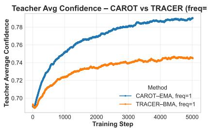

Figureure 1 · Overview of TRACERFigure 1. Overview of TRACER. The base contrastive objective is combined with a dynamic self-distillation loss from a Weighted Moving Average (WMA) teacher to preserve orthogonal pretrained knowledge while adaptively mixing within the task subspace. $\mathsf { \Pi } \mathbf { \check { \theta } } _ { \mathrm { C L I P } } ^ { 0 }$ represents the initial pretrained CLIP model. $\theta ^ { t }$ denotes the student model at time $t ,$ with its image and text encoder $( \mathcal { E } _ { \mathrm { I m a g e } }$ and ${ \mathcal { E } } _ { \mathrm { T e x t } } )$ being trained. The student receives gradient updates from ${ \mathcal { L } } _ { \mathrm { M M C L } }$ . The WMA teacher model $\psi ^ { t }$ is updated from the student’s parameters. The teacher then provides a teaching signal LSD-WMA to regularize the student. This interplay allows TRACER to adapt to new tasks while preserving pretrained knowledge. The complete training procedure is detailed in Algorithm 1.这张图概括 TRACER 的整体方法流程。阅读时先看模块之间传递的训练信号，再看作者如何把目标拆成可优化的子问题。

(c) Teacher Confidence Figure 6(c) Teacher Confidence Figure 6. Comparison of Teacher Dynamics (Update Frequency = 1). We track the evolution of the teacher model for CaRot (EMA) and TRACER (WMA) when updated at every step. The EMA teacher (blue) rapidly collapses onto the student $( \mathrm { K L } \to 0 )$ , losing its regularizing capability. The WMA teacher (orange) maintains a persistent, stable gap, providing continuous regularization without needing brittle update schedules.这张图/表用于判断 TRACER 的实验收益来自哪里。重点看替换、消融或跨模型设置下趋势是否一致，而不是只看单个最高分。
核心问题
通用表征部署常常要微调，如何不破坏预训练多模态几何是视觉 SSL/VLM 迁移的核心问题。
方法拆解
建立 multimodal contrastive finetuning 的几何分解；用 Weighted Moving Average teacher 做 persistent regularization，替代容易 collapse 的 EMA teacher。